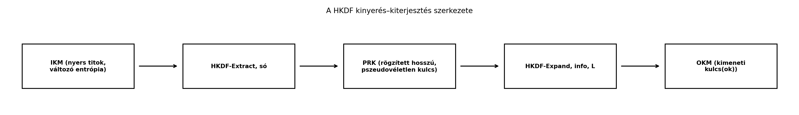

Az A Diffie–Hellman-kulcscsere alfejezetben láttuk, hogy a protokoll eredménye egy közös csoportelem, például egy érték. Ez a szám több száz vagy több ezer bites egész, de nem egyenletes eloszlású bitsorozat: a legfelső bitekben struktúra van, és az érték hossza sem feltétlenül rögzített, ha big-endian bájtokká alakítjuk. Ráadásul ugyanazt a közös titkot több célra is szeretnénk használni: egy folyamrejtjel kulcsához, egy MAC-kulcshoz, esetleg egy további kulcsszármaztatáshoz. Ha ugyanazt a nyers titkot vagy annak egy egyszerű hashét több primitívben is felhasználjuk, megsértjük a kulcselkülönítés elvét, és egy primitív gyengesége magával ránthatja a többit.
Példa. Alice és Bob Diffie–Hellman-t futtat, és a közös titokból AES-GCM kulcsot és HMAC-kulcsot szeretnének készíteni. Ha mindkettőhöz ugyanazt a 32 bájtos értéket használják, akkor egy támadó, aki megismeri az egyik kulcsot (például egy oldalcsatornás mérésből), azonnal birtokolja a másikat is. A megoldás egy kulcsszármaztató függvény (KDF), amely a nyers, esetleg nem egyenletes titokból több, egymástól gyakorlatilag független, egyenletes eloszlású kulcsot állít elő.
A HKDF a kinyerés–kiterjesztés (extract-then-expand) paradigmát követi. Képzeljük el úgy, mint egy kétfokozatú gépet: az első fokozat a nyers, változó entrópiájú bemenetből készít egy rögzített hosszúságú, már egyenletesnek tekinthető köztes kulcsot; a második fokozat ebből a köztes kulcsból tetszőleges számú, egymástól független kimeneti kulcsot állít elő, és mindegyikhez hozzáírja a felhasználás kontextusát.

A fenti folyamatban a só (salt) a kinyerést segíti, az info (kontextus) pedig a kiterjesztésben gondoskodik arról, hogy ugyanabból a PRK-ból különböző célokra más-más kimenet szülessen. A hosszparaméter azt szabja meg, hány bájt kimenetet kérünk.
Definíció. Kulcsszármaztató függvény (key derivation function, KDF) alatt olyan determinisztikus függvényt értünk, amely egy bemeneti kulcsanyagból (input keying material, IKM) és opcionálisan egy sóból, valamint kontextus-információból egy vagy több kimeneti kulcsot (output keying material, OKM) állít elő, és amelyet úgy terveztek, hogy a kimenetek egyenletes eloszlásúak és egymástól gyakorlatilag függetlenek legyenek akkor is, ha az IKM eloszlása nem egyenletes.
A KDF-nek nem kell titkosítania, és nem kell önmagában megvédenie a gyenge jelszavakat; az utóbbi feladatra a memóriaigényes jelszó-hash függvények valók, amelyeket a Jelszótárolás: só, PBKDF2 és bcrypt és a Memóriaigényes jelszó-hash: scrypt és Argon2 alfejezetek tárgyalnak. A HKDF gyors, és elsősorban olyan IKM-ekhez készült, amelyek már rendelkeznek elegendő entrópiával, de nem egyenletes eloszlásúak, például Diffie–Hellman-értékek.
Megjegyzés. A HKDF-et az RFC 5869 definiálja, és a HMAC-ra épül (lásd A HMAC). A HMAC kettős szerepet tölt be: kivonja az entrópiát, és PRF-ként kiterjeszti a kulcsot.
Definíció. Legyen egy hash-függvény, amelynek kimeneti hossza bájt. A HKDF két algoritmusból áll:
HKDF-Extract:
ahol a só a HMAC kulcsa, az IKM pedig
az üzenet. Ha a só üres, akkor
darab 0x00 bájtot használunk kulcsként. Az eredmény a
(pseudorandom key), amely
bájt hosszú, és a továbbiakban már egyenletes pszeudovéletlen kulcsnak
tekinthető.
HKDF-Expand:
A
-ból
és az info kontextusból tetszőleges, legfeljebb
bájt hosszú kimenetet állítunk elő a következőképpen. Legyen
a kért kimenet hossza bájtban, és legyen
.
Definiáljuk:
ahol
az
érték egyetlen bájtként (azaz
).
Az output:
A felső korlátja miatt a maximális blokkszám , ezért a maximális kimenet bájt. HKDF-SHA256 esetén , így a maximális kimenet bájt.
A só szerepe. A só (salt) nem feltétlenül titkos, de legyen véletlenszerű és egyedi. Ha az IKM alacsony entrópiájú (például jelszóból származik), a só megakadályozza, hogy a támadó előre kiszámítsa a gyakori IKM-ekhez tartozó PRK-kat. A só hiánya Diffie–Hellman esetén kevésbé kritikus, mert a közös titok entrópiája általában elég nagy, de a szabvány akkor is ajánlja.
Az info szerepe. Az info egy tetszőleges, de a
protokollban egyértelműen rögzített kontextus-sztring (például a TLS 1.3
"tls13 c hs traffic" címkéje, vagy egy saját
protokoll-sztring, pl.
"myproto v1 client->server enc key"). Az info bekerül a
HMAC bemenetébe, ezért ugyanabból a PRK-ból különböző info-val különböző
OKM-eket kapunk. Ez a kulcselkülönítés (key separation)
alapja: minden felhasználáshoz más info-t rendelünk, így a kulcsok nem
keverednek.
Továbbvitt eredmény. A HKDF-et és a kulcselkülönítés elvét használjuk az ECDH és X25519, a A TLS 1.3 kulcsütemezése, munkamenet-folytatás és 0-RTT, a A Signal-protokoll: X3DH és a double ratchet, valamint az 1. projekt: fájltitkosító eszköz AEAD-dal és jelszóból származtatott kulccsal és a 2. projekt: saját hitelesített kulcscsere-protokoll tervezése és elemzése alfejezetekben. A kulcsok célhoz kötésének gyakorlati életciklusát a Kulcskezelés: HSM, KMS, rotáció és életciklus alfejezet tárgyalja.
Tegyük fel, hogy Alice és Bob egy X25519 kulcscsere után egy 32 bájtos közös titkot kap, amelyet IKM-ként használunk. A cél: származtassunk belőle két 32 bájtos kulcsot, az egyiket AES-GCM-hez, a másikat HMAC-hoz. Válasszuk a következő paramétereket:
b"DH-csere-szimulacio"
bájtsorozatot használjuk, ami nem valódi DH-kimenet, csak a lépéseket
szemlélteti.b"tls13-session-salt" (nem titkos).b"application encryption key".b"application mac key".A HKDF-Extract kiszámítja a -t: Ezután a HKDF-Expand mindkét info-val lefut. A kimenetek az alábbi Python-kódban láthatók. A kulcsfontosságú lépés: ugyanaz a PRK, de más info, ezért a két OKM eltérő. Ha a sót vagy az info-t megváltoztatjuk, mindkét kimenet megváltozik.
A HKDF biztonsága azon a feltevésen nyugszik, hogy a HMAC egy pszeudovéletlen függvény (PRF, lásd PRF, PRP, switching-lemma és Luby–Rackoff). A kinyerés fokozatban a HMAC a sóval mint kulccsal az IKM-ből olyan kimenetet állít elő, amely már egyenletes eloszlású, feltéve, hogy az IKM elegendő min-entrópiával bír. A kiterjesztés fokozatban a PRK-t mint a PRF kulcsát használva a blokkok láncolata (mint egy szinkron folyamrejtjel, ahol a visszacsatolt előző blokk és az számláló együtt adja a következő bemenetet) biztosítja, hogy a kimeneti blokkok pszeudovéletlenek és egymástól függetlenek legyenek. Az info minden blokkba bekerül, ezért az info megváltoztatása az egész láncot újragenerálja; így a különböző célú kulcsok gyakorlatilag függetlenek.
Figyelem. Ha az IKM egy Diffie–Hellman-érték, akkor annak entrópiája általában magas, de nem feltétlenül egyenletes. A HKDF-Extract ezt a strukturális egyenetlenséget simítja ki, de nem pótolhatja a hiányzó entrópiát. Ha a DH-paraméterek rosszak (például kis alcsoport), a KDF nem menti meg a protokollt; a csoportellenőrzést a Közbeékelődés, hitelesített kulcscsere és kis alcsoportú támadások alfejezet tárgyalja.
A HKDF valódi munkát végez a böngésződben és a Signal-üzeneteidben.
TLS 1.3. A TLS 1.3 kulcsütemezése szinte teljes
egészében HKDF-Extract és HKDF-Expand hívásokból áll. A kézfogás során
az Early Secretből kiindulva HKDF-Extract hívásokkal állítják elő a
Handshake Secretet, majd a Master Secretet. Az egyes titkokból a
HKDF-Expand segítségével, jól meghatározott címkékkel
(HKDF-Expand-Label; az info a "tls13 " előtagot és pl. a
"c hs traffic", "s ap traffic",
"key", "iv" címkét tartalmazza) származtatják
a forgalmi titkokat, majd azokból az AEAD-kulcsot és az IV-t; a
Finished-üzenet HMAC-kulcsa a "finished" címkéből jön.
Ennek részleteit a A TLS 1.3 kulcsütemezése,
munkamenet-folytatás és 0-RTT alfejezetben dolgozzuk ki. A HKDF
hozzájárul a forward secrecyhez is, mert a kézfogás titkai csak átmeneti
kulcsokból származnak, és a régi titkosító kulcsok nem vezethetők vissza
a hosszú távú kulcshoz.
Signal-protokoll. A Signal Double Ratchet
mechanizmusában minden üzenethez kétféle kulcsot kell származtatni: egy
üzenettitkosító kulcsot és egy következő lánckulcsot. A
KDF_RK HKDF-SHA256-ot használ (a gyökérkulcs a só, a friss
DH-érték az IKM); a KDF_CK HMAC-SHA256 a lánckulccsal, ahol
a konstans 0x01 bemenet adja az üzenetkulcsot, a
0x02 a következő lánckulcsot (a pontos részletek
ellenőrizendők a Signal-specifikációban). A különböző konstansok – a
HKDF info-jához hasonlóan – biztosítják a kulcselkülönítést, és
garantálják, hogy a lánckulcsból származó üzenettitkosító kulcs és a
következő lánckulcs soha ne egyezzen meg, és egy üzenetkulcs
kiszivárgása ne fedje fel a lánc többi részét. Ezt a A Signal-protokoll: X3DH és a double ratchet
alfejezetben elemezzük.
A gyakorlatban soha ne implementáljuk a HKDF-et kézzel; a
cryptography csomag elérhető, auditált megvalósítást ad. A
következő kód a fenti kidolgozott példát hajtja végre.
# OKTATÁSI CÉLRA – NEM ÉLES HASZNÁLATRA
# Tesztvektor: a bemenetek rögzítettek, így a kimenet determinisztikus.
from cryptography.hazmat.primitives import hashes
from cryptography.hazmat.primitives.kdf.hkdf import HKDF
def derive_key(ikm, salt, info, length=32):
hkdf = HKDF(
algorithm=hashes.SHA256(),
length=length,
salt=salt,
info=info,
)
return hkdf.derive(ikm)
ikm = b"DH-csere-szimulacio" # szimulált DH-érték bájtjai
salt = b"tls13-session-salt" # nem titkos, egyedi só
aes_key = derive_key(ikm, salt, b"application encryption key")
mac_key = derive_key(ikm, salt, b"application mac key")
print("AES-kulcs hossza:", len(aes_key), "bájt")
print("AES-kulcs (hex):", aes_key.hex())
print("MAC-kulcs hossza:", len(mac_key), "bájt")
print("MAC-kulcs (hex):", mac_key.hex())
print("A két kulcs különbözik:", aes_key != mac_key)A várt kimenet (futtatva, cryptography 46.0.5, Python
3):
AES-kulcs hossza: 32 bájt
AES-kulcs (hex): a187aa6f24befc06380867e598997036793257f98c214d51e8dccd4407168686
MAC-kulcs hossza: 32 bájt
MAC-kulcs (hex): 408e70a3bdc56c33c510293c641391042c669b603f29f3a5cee3f2e7b51d3d31
A két kulcs különbözik: TrueA két kulcs értéke eltér, mert az info eltér; a bemenetek
rögzítettek, ezért a kimenet mindig ugyanez. A derive
metódus minden hívás után lezárja az adott HKDF-objektumot, ezért minden
kulcshoz új HKDF példányt kell létrehozni; a fenti
derive_key segédfüggvény ezt teszi.
Ugyanazt a kulcsot több célra használni. A leggyakoribb hiba, hogy a DH-értéket közvetlenül AES-kulcsként és MAC-kulcsként is használják. Ha az egyik primitív gyengül vagy kiszivárog a kulcs, a másik is azonnal kompromittálódik. Helyes gyakorlat: HKDF-fel külön, info-val megkülönböztetett kulcsokat származtatni.
Az info elhagyása vagy nem egyértelmű megadása.
Ha ugyanabból a PRK-ból úgy származtatunk két kulcsot, hogy az info üres
vagy mindkettőnél ugyanaz, a két kimenet azonos lesz, vagy legalábbis
nem garantált a szétválasztás. Az info legyen protokollszinten
specifikált, például "tls13 c hs traffic" vagy egy saját
"myproto v1 client->server enc key", és tartalmazzon
verzió-, szerep- és irányinformációt, ha szükséges.
A só elhagyása alacsony entrópiájú IKM esetén. Diffie–Hellman esetén a só hiánya elfogadható, de jelszóból származó IKM-nél katasztrofális: a támadó előre kiszámíthatja a gyakori jelszavak PRK-it. Jelszavakhoz a Jelszótárolás: só, PBKDF2 és bcrypt és a Memóriaigényes jelszó-hash: scrypt és Argon2 szerinti lassú KDF-eket használjuk, nem HKDF-et.
A HKDF-Expand hosszkorlátjának figyelmen kívül
hagyása. A HKDF-Expand csak legfeljebb
bájtot tud előállítani. Ha ennél többet kérünk, a szabvány megtiltja; a
cryptography megvalósítás hibát dob. A gyakorlatban 32 vagy
64 bájt elegendő.
A sót a random modullal generálni.
A só nem titkos, de véletlenszerűnek kell lennie. A random
modul nem kriptográfiai minőségű; a sót a secrets modulból
vagy os.urandom-ból származtassuk. A
cryptography csomag HKDF osztálya nem generál
sót, azt a hívónak kell megadnia.
1. feladat (A). Definiáld az IKM, PRK és OKM fogalmát, és add meg a HKDF-Extract, illetve HKDF-Expand képletét SHA-256 hash esetén.
2. feladat (A). Számítsd ki a maximális kimeneti hosszt HKDF-SHA384 esetén. (Tipp: SHA-384 kimenet 48 bájt.)
3. feladat (B). Egy protokollban egy 32 bájtos közös titokból három kulcsot kell származtatni: egy AES-128 kulcsot (16 bájt), egy HMAC-SHA256 kulcsot (32 bájt) és egy további 64 bájtos pszeudovéletlen bitfolyamot. Add meg a HKDF-hívásokat: milyen sót, info-t és hosszakat használj? Indokold a választást.
4. feladat (B). Miért nem elegendő az IKM-et egyszerűen -mel hashelni, ha több, egymástól független kulcsot szeretnénk? Hogyan oldja meg a HKDF ezt a problémát?
5. feladat (C). Fogalmazd meg, hogy a HKDF-Expand láncolatában hogyan biztosítja az info paraméter, hogy az OKM minden blokkja megváltozzon, ha az info megváltozik. (Feltéve, hogy a HMAC mint PRF ütközésmentes.)
6. feladat (D). Adott egy játékimplementáció, amely X25519 után a közös titkot közvetlenül használja AES-GCM kulcsként, és ugyanazt a titkot használja a hozzá tartozó HMAC-kulcshoz is. Írd le, milyen támadásokat tesz lehetővé ez a séma, és módosítsd a kódot úgy, hogy HKDF-fel két különböző, info-val elválasztott kulcsot származtasson.
Nem. A HKDF-Extract sója nem titkos, de legyen véletlenszerű és egyedi. A só célja, hogy megakadályozza az előre számított szótáras támadásokat, és lehetővé tegye ugyanazon IKM többféle felhasználását. A titkosságot az IKM hordozza.
Mert a DH-érték nem egyenletes eloszlású bitsorozat, és nyers használata strukturális támadásokhoz vezethet; a HKDF-Extract kinyeri az entrópiát, a HKDF-Expand pedig tetszőleges számú, egymástól független kulcsot állít elő.
Az info kontextus-sztring, amely bekerül a HMAC bemenetébe, így ugyanabból a PRK-ból különböző info-val különböző OKM-ek születnek. Ez a kulcselkülönítés alapja.
SHA-512 esetén bájt. A maximális kimenet bájt.
Ha az info megváltozik, akkor a HKDF-Expand blokkjainak számítása során minden blokkban szerepel az info, így az egész lánc megváltozik; a kimenet egy másik, az előzőtől gyakorlatilag független pszeudovéletlen sorozat.
1. feladat megoldása. Az IKM (input keying material) a nyers bemeneti titok, például egy DH-érték. A PRK (pseudorandom key) a HKDF-Extract kimenete, amely már rögzített hosszúságú és pszeudovéletlen. Az OKM (output keying material) a HKDF-Expand kimenete, a végső kulcs vagy kulcsok.
Képletek:
2. feladat megoldása. SHA-384 esetén . A maximális blokkszám , ezért a maximális kimenet bájt.
3. feladat megoldása. Válasszunk egy egyedi,
véletlenszerű 16 bájtos sót (például
secrets.token_bytes(16)), és a közös titkot IKM-ként
használjuk. Három HKDF-példány, mind SHA-256-tal,
rendre 16, 32, 64, info pedig "AES-128 key",
"HMAC-SHA256 key", "random bitstream". A só
mindháromnál ugyanaz lehet, mert az info eltér, de ha akarjuk,
használhatunk külön sót is. Az info egyértelműen azonosítja a célt, így
a kulcsok elválnak. A 64 bájtos kimenet a HKDF-SHA256 korlátján belül
van.
4. feladat megoldása. A egyszeri hash nem tartalmaz kontextust, ezért ha két célra ugyanazt a kimenetet használjuk, nem teljesül a kulcselkülönítés. Ha a két célhoz különböző hash-eket akarunk, valamilyen kontextust kell keverni, például és , de ez esetleges hosszkiterjesztéses vagy egyéb szerkezeti problémákhoz vezethet, és nem szabványos. A HKDF ezt a szabványos extract-then-expand szerkezettel, a HMAC PRF-tulajdonságával és az info mezővel oldja meg, így a kimenetek heurisztikusan függetlenek.
5. feladat megoldása. A HKDF-Expand blokkja közvetlenül tartalmazza az info-t a HMAC üzenetében. Ha az info megváltozik, a HMAC bemenete megváltozik, így megváltozik (feltéve, hogy a HMAC nem ütközik). Ekkor bemenete is megváltozik, mert tartalmazza -et és az info-t, így is megváltozik, és így tovább. Ezért az összes blokk megváltozik, tehát a teljes OKM megváltozik. Az állítás lényegében a HMAC mint ütközésmentes PRF tulajdonságán múlik.
6. feladat megoldása. Ha a közös titkot közvetlenül használjuk AES-GCM kulcsként és HMAC-kulcsként is, akkor egyetlen kulcs kompromittálódása (például egy AES-GCM nonce-újrahasználatból származó kulcs-visszafejtés vagy oldalcsatornás szivárgás) a másik kulcsot is felfedi. Ráadásul a DH-érték nem egyenletes, ami további kockázatot jelent. A javítás: HKDF-fel két kulcsot származtatunk, info-val megkülönböztetve.
Példakód (rövidítve, a derive_key segédfüggvényt az
előző szakaszban definiáltuk):
# OKTATÁSI CÉLRA – NEM ÉLES HASZNÁLATRA
# ... (derive_key definíció itt) ...
ikm = x25519_shared_secret # a közös titok bájtjai
salt = secrets.token_bytes(16)
aes_key = derive_key(ikm, salt, b"AES-GCM key", length=32)
mac_key = derive_key(ikm, salt, b"HMAC key", length=32)A secrets.token_bytes(16) biztosítja a véletlenszerű
sót. Az info egyértelmű, így a két kulcs elkülönül.
A HKDF (RFC 5869) egy HMAC-alapú kulcsszármaztató függvény, amely a
kinyerés–kiterjesztés (extract-then-expand) paradigmát követi. A
HKDF-Extract a sóval mint HMAC-kulccsal az IKM-ből előállítja a PRK-t, a
HKDF-Expand pedig a PRK-ból, az info kontextussal és a kért hosszal
legfeljebb
bájt kimenetet generál. Az info mező biztosítja a kulcselkülönítést:
ugyanabból a PRK-ból különböző info-val különböző, gyakorlatilag
független kulcsok származtathatók. A HKDF elsősorban már magas
entrópiájú, de nem egyenletes IKM-ekhez (például
Diffie–Hellman-értékekhez) való; jelszavakhoz lassú KDF-eket kell
használni. A gyakorlatban a cryptography csomag HKDF
osztályát használjuk, a sót secrets-ből generáljuk, és
minden célhoz egyedi info-t adunk. A HKDF-et alkalmazzuk az ECDH és X25519, a A TLS 1.3
kulcsütemezése, munkamenet-folytatás és 0-RTT, a A Signal-protokoll: X3DH és a double ratchet és a
záróprojektekben is; a kulcselkülönítés életciklus-gyakorlatát a Kulcskezelés: HSM, KMS, rotáció és életciklus
tárgyalja.
cryptography (pyca) dokumentációja – a
HKDF osztály API-ja.A szabványszámokat és a hash-hosszakat stabil tudás alapján közöltem;
az RFC 5869 szakaszszámait és a cryptography pontos
API-viselkedését a hivatkozott dokumentáció alapján kell ellenőrizni. A
Python-kód közölt hex kimenetét helyben futtattuk
(cryptography 46.0.5).